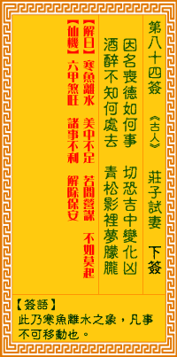

观音灵签第八十四签 【庄子试妻】 |
 | |||
因名丧德不和同 切忌忙中变作凶 醉后不知何处去 青松影里睡朦胧 |
||||
| 【吉凶】 | 下下签 | 【宫位】 | 未宫 | |
| 【签语】 | 此卦寒鱼离水之象，凡事不可移动也。 | |||
| 【解曰】 | 寒鱼离水 美中不足 若问营谋 不如莫作 | |||
| 【仙机】 | 此签家宅六甲煞旺，诸事不利，解除保安。 | |||
| 【详解】 | 因为虚名而失去道德修养，哪里能够得到认同?忙中有错更恐招来祸患;如人酒后茫茫，东南西北不知何处去，却是在青松树下睡着了! 寒鱼离水，美中不足，若问营谋，如何结局。此签因名丧德之象，凡事劳费心力。 本签者。因名丧德之象。因之。凡事劳费心力而无益者也。为了攫取一己之名利。丧其德行。受世人辱骂。指摘者何用。神灵诫之曰。切忌忙中变作凶。本为善意 。惟己之言行中不知不觉中。将善心变为恶而导致凶。易言之。君之命也。寒鱼离水美中不足若问营谋如何结局。 此签有”忙中有错”之意。奉劝当事人，凡事谨言慎行。人在忙碌或无意识的状态下，很容易说错话做错事。也许本身并无恶意，但所谓”覆水难收”，很可 能因此而伤害到对方。所以应时刻谨慎小心，注意自己的言行举止。如果是规劝对方，也不宜因为太过求好心切而口出恶言。否则原本的一番好意却随着情绪影响 而变质，岂不甚是遗憾。相反地，对于他人的讥讽批评，也不要因此怀恨在心、甚至想找机会报复羞辱回去。须知”己所不欲，勿施于人”，凡事包容宽厚，可让 事情更两全其美。 | |||
| 【典故】 | 庄子是春秋战国人，大思想家。有一天，他心血来潮，问他老婆，在他死后，是为他守节，还是会再嫁？他老婆自然是信誓旦旦。庄子修 炼道法，便以诈死试妻，停柩厅中，他幻化一美男子到来吊丧，自称是老庄远方好友，庄妻为其风仪所迷，两人眉来眼去，正在朗情妾意的时候，那男子捧心倒地，大呼心痛，说 除非有‘人心’做汤，服之可愈，就是死了不过三日得人心也可以，庄妻乃演出‘大劈棺’的一幕，要取棺中庄子的心救其情郎，棺木劈开，庄子一跃而出。今古奇观 | |||